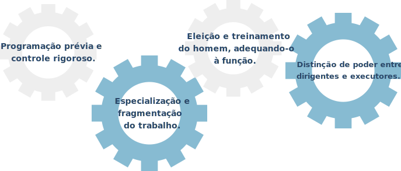

TÓPICO 1
GESTÃO ESTRATÉGICA E PARTICIPATIVA
TÓPICO 1
GESTÃO ESTRATÉGICA E PARTICIPATIVA
O propósito primordial era, obviamente, elevar a produtividade do trabalho coletivo, mas com a fragmentação, a individualização e a simplificação das tarefas que compõem os processos de trabalho. Os quatro princípios capitais da administração científica, segundo Taylor (1960 apud CAMPOS, 2000, p. 37), são:
